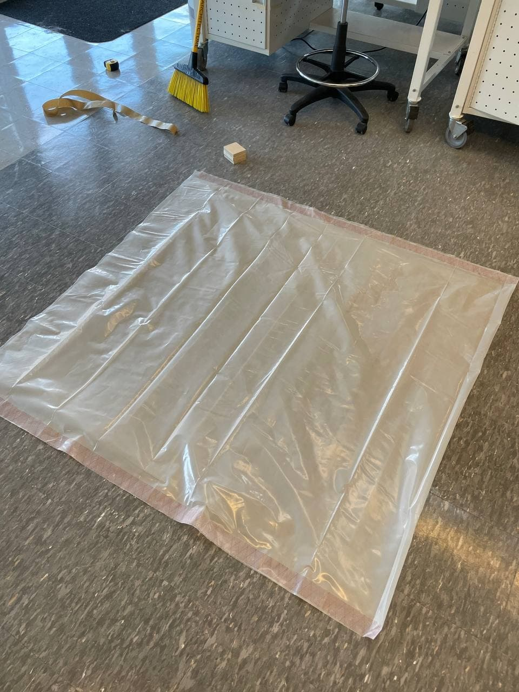

Assignment 3- INFLATABLES
Materials:
Plastic sheets
Motivations:
- Getting people to create a desired output/behavior
- Encouraging interaction with space through gamification
- Using Inflatables to create a sense of winning/losing
- Using competition to motivate certain inputs
Inspiration / Case studies:
Tug of War:
Pie Face:
Zorb Soccer:
Concepts / Sketches:
Dominion & Conquer
Seating on the pillow
Jumping & Burning Ca
Ideas for User Interface (UI)
First Physical Prototype:
Built Process:
Using cartoon tape for sealing
The first prototype works with one fan

Testing fans with different powers
After testing pressure tolerance, gaps appeared at certain points
The second prototype uses iron and heat to seal
There are two fan entries to have a greater range of motion and more control. There is also one air output to help prevent gaps from occurring.
Larger pillow
User Interface (UI):
Balloon Concept:
Biometric Sensor (BMP280)
Connection of the sensor and Arduino
Volume change in the balloon is shown in a the left bar (Pressure / Tempreture)
Gamification / Interaction:
By using something as simple as a cushion and using it at a large scale an interactive space can be created. An air cushion is easy to fabricate and allows for people to sit and get involved in the inflatable space. People can also bring a friend to hang out with them creating an inviting environment with the cushion changing in pressure as more people are added to the cushion.
By using two systems the idea of competition comes into play. Who can blow longer? An idea of making a game out of the system makes it so people are more likely to interact with the system and will also bring others to play along with them. The simple idea of letting the two systems have visual contact creates a space more likely to be utilized.
This project has taken the basic idea of inputting a minimal amount of work, or effort and getting the maximum amplified output. We have done this by having you blow up a simple balloon, and when the volume of the balloon is expanded, a wireless signal is sent out causing a giant air cushion to inflate, which activates another balloon to blow up in an observable area next to the original input/user.
Remote Interaction:
The see-saws, built to be able to fit through the slats of the fence, turned into a temporary, interactive playground right on the border as kids on the Mexico side of the wall ran up to play on them.
Signals


.gif)